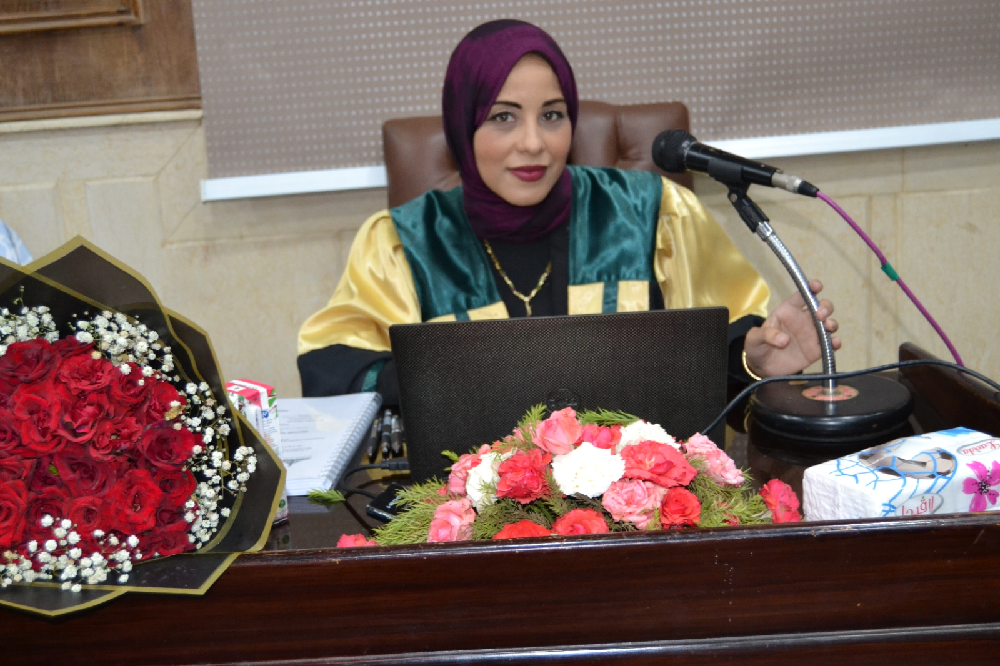

About
PhD candidate in Business Administration (Operations & Production Management), Assistant Lecturer at Ain Shams University, and an applied AI/data specialist who ships real projects, not just slides.

I integrate data analytics, artificial intelligence, and digital tools into curriculum design, course delivery, and student assessment — and I hold myself to the same evidence-based standard in my own applied projects: a supply chain risk model, a decision-simulation system, two automation workflows, and a BI dashboard, all built and shipped, not just prototyped.
My research sits in green manufacturing and digital financial inclusion; my applied work sits in machine learning, automation, and AI-assisted instructional design. Same discipline, two domains.
Path
General AI fluency track — applied AI use cases for organic growth automation.
Teach and support Operations & Production courses; integrate data analytics, AI, and digital tools into teaching and learning.
Contributed to digital content, online courses, and interactive learning solutions; integrated AI and automation into academic projects.
Assisted in course delivery, lab sessions, and student project supervision.
Research focus: Operations & Production Management in the context of the Fourth Industrial Revolution.
Thesis on Green Manufacturing; findings published in a peer-reviewed journal.
Production and Operations Management.
Research
Examines the concept, characteristics, benefits, and risks of digital payments and their relationship to advancing financial inclusion, using Egypt (2022–2024) as a case study.
Identifies real green-manufacturing practices and the obstacles hindering their adoption, based on an analytical-descriptive survey of 102 respondents.
Toolkit